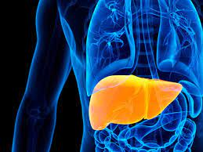
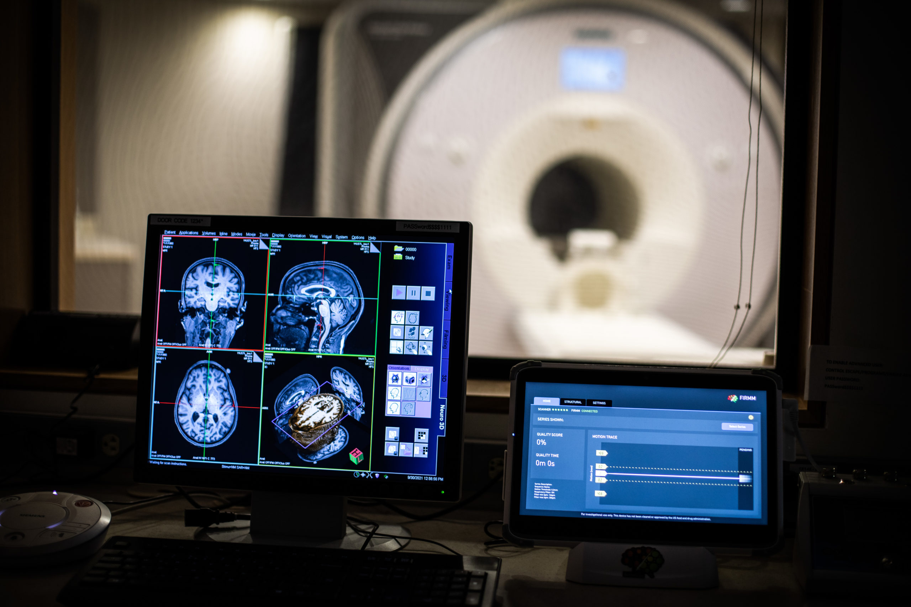

Skills:
Dashboard Creation, Tableau Public

- Developed an interactive dashboard using Tableau Public to visualize trends in emergency room patient data.
- Analyzed key metrics like patient demographics, wait times, satisfaction levels, and referral patterns.
- Optimized hospital operations by identifying bottlenecks and improving patient flow.
Skills:
Microsoft Excel, Power Query, Power Pivot, DAX

- Analyzed product and brand performance using sales data in Microsoft Excel.
- Led the ETL process and data modeling using Power Pivot.
- Utilized DAX for deep insights and data-driven decision-making.
Skills:
MySQL, SQL, Power BI

- Developed a Power BI dashboard to visualize AtliQ hardware sales trends.
- Established a MySQL database and created a star schema Data model for efficient analysis.
- Enabled stakeholders to make data-driven decisions, expecting a 10% revenue increase.
Skills:
Data Analysis, Predictive Modeling, Machine Learning

This project predicts Alzheimer's Disease onset using MRI data. It involved predictive modeling and machine learning techniques.
Skills:
Python and essential libraries
The Cancer Risk Assessment Calculator is a Python-based tool designed to assess cancer risk based on lifestyle and genetic factors.

In this initiative, I spearheaded the efforts to leverage Power BI's capabilities to extract and visualize critical insights from employee performance data at INX Future Inc.
Skills:
Predictive Modeling, Machine Learning

This project focuses on developing an advanced diagnostic recommendation system leveraging machine learning to provide personalized healthcare solutions.

This project aims to develop a machine learning model to predict liver disease at an early stage, utilizing data from the Indian Liver Patient Dataset (ILPD).

The Telehealth-Patient Integration Project aims to enhance healthcare delivery using telecommunications technologies, focusing on improving access for elderly patients and those in remote or underserved areas.

Developed a machine learning model to predict obesity levels using behavioral and physical attributes, achieving the highest accuracy of 96.69% with the SVM classifier.

This project delves into the alarming security vulnerabilities found in connected medical devices and their repercussions for patient data security.

Developed a deep learning model using convolutional neural networks (CNNs) to detect brain tumors from MRI scans, achieving an accuracy of 94%.

Developed a deep learning model using convolutional neural networks (CNNs) to predict Alzheimer's disease and its severity from MRI scans, achieving an accuracy of 94%.